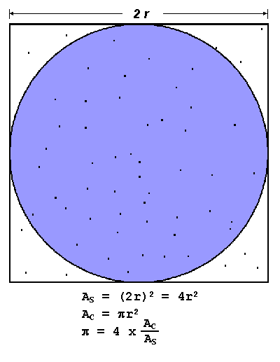
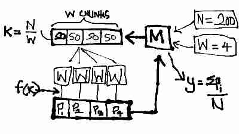

Throwing Darts
Update: November 6, 2012: We further organized the content of this post and conducted a 3-hour tutorial at PyCon India 2012. The source code and tutorial slides are available on our Github repository.
This weekend was illuminating. We'd been assigned the task of building a compute cluster, with the freedom to intelligently choose every component of the distributed system. This post documents the how's and why's of building the system from the ground up with Beanstalkd and running Python code to estimate π in parallel.
Synopsis
- We used Beanstalkd for our message queue.
- We used Beanstalkc for Python bindings.
- Our system is fully worker-fault-tolerant.
- Our system is partially server-fault-tolerant.
- Our code is open-source.
Contents
Purpose And Background
The Purpose
The aim was to construct something reasonably fault tolerant that could execute simple parallel algorithms across a bunch of nodes, with a visible speed-up. Other motivations were to put together a system that could serve as a useful pedagogical tool for a parallel computing course, and to replace the cranky old Rocks cluster we currently tinker around with, with something more fun.
The Beef With MPICH
We began our experiments with MPICH, which seems to be the de facto standard for expressing parallel algorithms in code. We spent most of the day getting our nodes to talk to each other via SSH, which involved creating new users on each node, authorizing keys and a bunch of other annoying things that clutter your nodes up pretty bad.
Writing code the MPICH way is reminiscent of the fork() and PID-check pattern we use in single-node multi-process code. Each MPICH program is (from our experience) a single C file, with logic for the master interleaved with the logic for each worker node amongst a tangled net of if-PID-equals-me conditions. Node failure was another animal, causing the entire program to stall indefinitely until the node was put back into action.
This was frustrating. Much thought went into understanding the flow of logic and the usual fight with C's idiosyncracies. Further, the idea of remotely executing multiple copies of the same binary and then collecting the results seemed suitable for short-running programs on well-behaved hardware, a luxury we didn't have.
We preferred something lazy, something more fluid. We wanted our workers to sit around on all nodes waiting for jobs to do. We wanted both our master and our workers to know only about the work that needs done, so they can be independently coded, debugged, tested and optimized.
Distributed Message Queues
The concept is simple to grasp; a set of distributed FIFO queues accessible via TCP sockets. Producers push to the queue and consumers pull from the queue, with queue elements being any arbitrary data. The confusion begins when you sit down to evaluate the whole slew of message queueing solutions buzzing around the web these days.
RabbitMQ and ZeroMQ are probably the first options you'd come across. While very popular and performant, they are generic message queues. Our task involved a special subset of what a queue could serve, that of job queueing. We needed a mechanism to farm out jobs to workers, monitor their progress and do the necessary cleanup if a worker failed to perform. While we could build this functionality on top of a generic queueing solution, we weren't up for reinventing the wheel just yet.
Celery was one such specialized solution, but at first glance, seemed to be heavily tied in to Django applications. Gearman was another that seemed seductively convenient; it brought with it an entire framework to farm out jobs, persist queues, accomodate job server failure and the works, but we decided to let it pass for something lighter until we figured out our own needs.
Beanstalkd fit the bill perfectly. It's the lightest work-queue solution we could find that supported some form of queue persistence and worker failure recovery. To top that off, getting a working Beanstalkd setup took all of ten minutes!
Setting Up Your Nodes
Prepare The Ingredients
You'll need to give the following some space on your local drive before we start doing anything cool:
- python-setuptools or python-distribute: A bunch of utility scripts to install Python modules; available via your package manager.
- Beanstalkd: The Beanstalk queue server; download methods exist for most package managers, but I'd recommend cloning the most recent version from the source at Github.
- Beanstalkc: Python bindings for Beanstalkd; you'll need to get this from the source
- python-yaml or pyYAML: Python libraries to parse YAML matter; available via your package manager.
Beanstalkd
If you've installed Beanstalkd using your package manager, you won't need to compile the sources. If not, you'll need to change into the source directory to compile the source and run tests:
$ make $ ./check.sh
Run the Beanstalk server on port 11300 (this is arbitrary) on your local host:
$ beanstalkd -l 127.0.0.1 -p 11300
Beanstalkc
You'll just need to switch to the Beanstalkc source directory and run the provided install script:
$ sudo python setup.py install
Testing The Combination
Fire up your Python REPL and mimic the statement flow in the listing below:
>> import beanstalkc >> bean = beanstalkc.Connection(host='127.0.0.1', port=11300) >> bean.put('Lala') 1 >> job = bean.reserve() 1 >> job.body Lala >> job.delete()
That's it, you've just created your first distributed task queue! The listing above created a connection to the queue and added a new task; tasks in Beanstalkd are always strings, any non-string data you send across must be serialized. We then reserve a job from the queue, which is worker-slang for "I'll work on this right now!". Once you've reserved your job, you can retrieve its body and pretend to do some work on it. When you're finished, you need to notify the Beanstalkd server by deleting the job from the queue. If a worker fails to delete a job, the worker is forsaken and its job is placed back onto the tail of the queue after a specified time interval.
Writing Some Code
The Algorithm

The code for the algorithm was derived from that presented in Introduction to Parallel Computing. It turns out to be embarassingly parallel, and hence, easily implementable in a master-worker setup:
The master allocates to each worker the number of points to generate within the square. The number of points is derived simply be splitting the total number of points we desire among the number of workers we expect to have. More points lead to more accurate estimation.
The worker receives the number of points it must generate from the master, and then generates those points, or throws those darts into the square. It calculates the number of darts that land within the circle and returns the ratio of that to the total number of darts back to the master.
System Design

The system follows a simple producer-consumer model. There are two queues; the one that the master M pushes to and workers consume from is called message-for-worker, and the one that the workers push to and the master consumes from is called message-for-client.
M accepts as a parameter N the number of darts to throw, and W as the number of workers it can expect to be active. It then splits the N darts equally among W workers and pushes each worker's quota to message-for-worker.
Each worker consumes a single item k from message-for-worker and performs f(k): throwing k darts into the square and then counting the number of darts Pi falling within the circle. Each worker pushes its Pi to message-for-client.
The master waits for all workers to complete, and then sums all the workers' responses in message-for-client, divides by the total number of darts N and multiplies the resultant by four to get the estimated value of π.
The Client Code
The complete and most recent code can be retrieved from the source
The client code is easy to grok after having understood the algorithm it expresses and having read the Beanstalkc tutorial. The comments serve as pointers to Beanstalkd concepts that I've not explained in the prior sections
import beanstalkc QUEUE_TO_USE = "msg_for_worker" QUEUE_TO_WATCH = "msg_for_client" QUEUE_TO_IGNORE = "default"
This binds variables to the names of our queues for convenience. default is a queue that is created by default by the Beanstalkd server, it would do us good to ignore it.
N = 10 ** 6 # Number of darts to throw in total K = 2 # Number of jobs to split the work into TTR = 40 # Deadline for jobs to complete (seconds) beanstalk = beanstalkc.Connection(host="127.0.0.1", port=11300) beanstalk.use(QUEUE_TO_USE) beanstalk.watch(QUEUE_TO_WATCH) beanstalk.ignore(QUEUE_TO_IGNORE)
The first triplet of lines is something you'll need to be aware of and adapt to your scenario. N is the total number of darts to throw, and directly affects the accuracy of your estimate and the computing power required. K needs to be set equal to the number of worker nodes you expect to see active. Leaving these unchanged won't break any functionality, but it will leave you taking long coffee breaks until you see any meaningful results.
It also tells the Beanstalkd server which queues to watch, or consume from, use, or push to, and ignore, which takes on its literal meaning this time.
use_queue_was_full = False while True: # Block until the queue we push to is empty if (beanstalk.stats_tube(QUEUE_TO_USE)["current-jobs-ready"] + beanstalk.stats_tube(QUEUE_TO_USE)["current-jobs-reserved"]) == 0: break else: use_queue_was_full = True
This segment of code enables server fault tolerance, which we discuss in a later section.
points_per_job = int(N / K) if not use_queue_was_full: for i in range(K): # Push all the jobs to the queue print "Put job", str(i), "to job queue" beanstalk.put(str(points_per_job), ttr=TTR) print total_circle_count = 0 responses_received = 0 for i in range(K): job = beanstalk.reserve() responses_received += 1 total_count = total_circle_count + int(job.body) job.delete() print "Received " + str(responses_received) + "/" + str(K) + " responses" beanstalk.close()
This segment pushes the worker quotas to the queue and waits for results. On receiving results, it accumulates them in a variable and then closes the connection to Beanstalkd.
pi = (4.0 * total_count) / (responses_received * points_per_job) print print "The value of pi is " + str(pi) print "That took ", str(time.time() - start_time), " seconds!"
This uses the accumulated sum of the circle counts returned by the workers to compute the estimated value of π, in accordance with the algorithm described earlier.
The Worker Code
The complete and most recent code can be retrieved from the source
The worker code simply implements the algorithm in the context of the system, both of which have been described above. Most of the boilerplate matches that in the client, the differences have been briefly summarized below:n
while True: # Indefinitely wait for jobs to do print "Connecting to job server..." beanstalk = beanstalkc.Connection(host='127.0.0.1', port=11300) beanstalk.watch(QUEUE_TO_WATCH) # Reserve jobs from this queue beanstalk.ignore(QUEUE_TO_IGNORE) # Ignore this queue for reservation print "Waiting for jobs..." job = beanstalk.reserve() # Blocks until a job is available
This makes our worker a daemon of sorts; it sits around indefinitely, waiting for jobs to do, and on completion of a job, goes back to waiting for the next job to work on.
n = int(job.body) # n = number of darts to throw start_time = time.time() # Algorithm Reference: Monte-Carlo estimation of Pi # Source: https://computing.llnl.gov/tutorials/parallel_comp/#ExamplesPI square_edge = 2.0 # Square edge length center_x, center_y = 1.0, 1.0 # Circle center coordinates radius = 1.0 # Circle radius circle_count = 0 # Counts points within the circle print print "Generating", str(n), "points..." try: for i in xrange(n): x = random.random() * square_edge # 0 <= x < square_edge y = random.random() * square_edge # 0 <= y < square_edge if (x - center_x) ** 2 + (y - center_y) ** 2 <= radius ** 2: circle_count = circle_count + 1 except Exception: print "Job failed.", n job.release() beanstalk.use(QUEUE_TO_USE) # Push the calculated number of points beanstalk.put(str(circle_count)) # in the circle to the client queue job.delete() # Tell the job server you're done beanstalk.close() print "Finished job in", str(time.time() - start_time), "seconds" print
This simply implements the estimation algorithm discussed in an earlier section. The result of the algorithm is pushed to QUEUE_TO_USE by the worker.
Blast Off
Getting the code running involves simply running the worker Python script on a number of terminals to spawn as many workers as you need, and then starting the client Python code to farm out jobs to the workers. If you're attempting this in a distributed setup, ensure you make the necessary modifications in the server address and port.
Getting Fault Tolerant
Worker Fault Tolerance
Worker fault tolerance is baked in to the Beanstalkd architecture. Workers work on jobs from the queue by reserving them. On completion, they are expected to delete the job from the queue, which is a way of notifying the server that it has completed its job. If, however, a worker fails to delete a job within a configurable time interval TTR, the job is re-added to the tail of the queue. Thus, in the worst case when all but one worker fail, the single worker will sequentially consume and work on all the items in its queue.
Server Fault Tolerance
To provide some form of persistence for the in-memory queue, Beanstalkd supports an
option called binlog. Enabled with the b
However, to take advantage of server restarts and the binlog, the client code will need to be augmented with some failure-resume intelligence. In particular, the client must not re-push data into its queue if there exist items remaining from before the server failed. This is enabled with this bit of code in the client:
use_queue_was_full = False while True: # Block until the queue we push to is empty if (beanstalk.stats_tube(QUEUE_TO_USE)["current-jobs-ready"] + beanstalk.stats_tube(QUEUE_TO_USE)["current-jobs-reserved"]) == 0: break else: use_queue_was_full = True
This uses Beanstalkd's statistics queries to gain information about the number of items in the queue it's pushing to. Until that queue is empty, it blocks and waits.
Reflections
I can't help reflecting on how difficult it was to predict when our nodes would turn nasty. Even though we were looking through layers of well organized cellophane; our own code, a minimalistic backbone and simple socket IO.
What if, instead, we were obliged to build an underground piping system for drinking water? With no web interface to monitor leaky hardware, no Nagios alerts when rodent miscreants chew threw your valves, and misbehaving pipes occasionally sharing their contents, causing much bowel discomfort for the townspeople.
Not to mention you'd have to dig up a lot of mud to fix things.